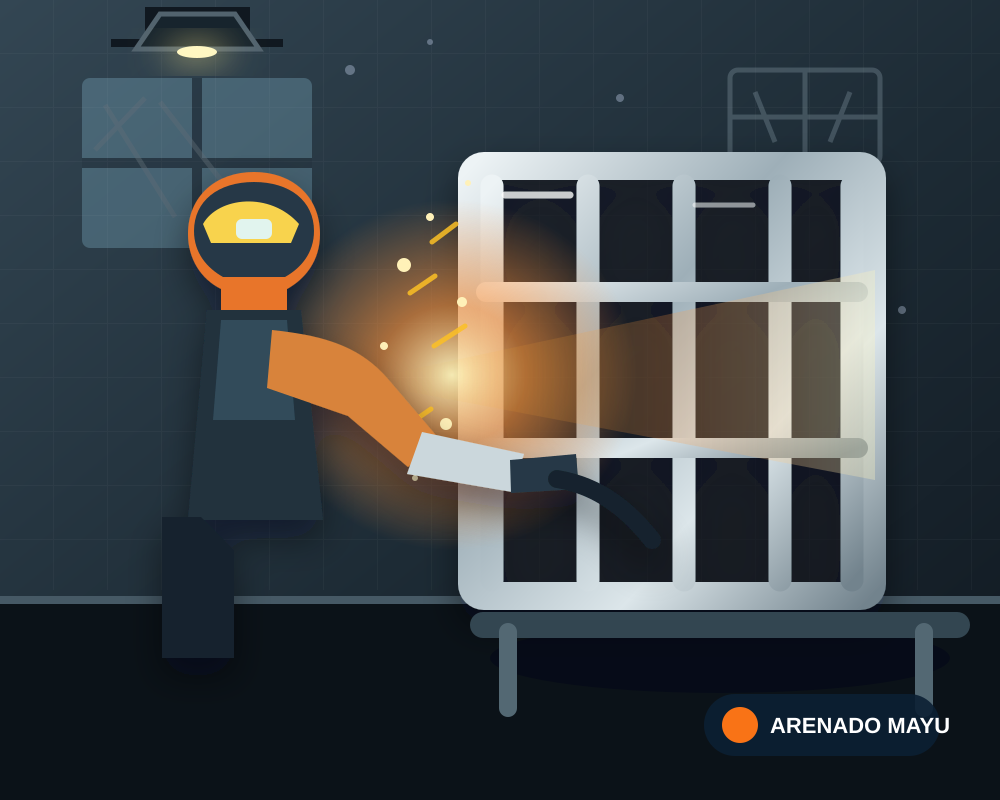
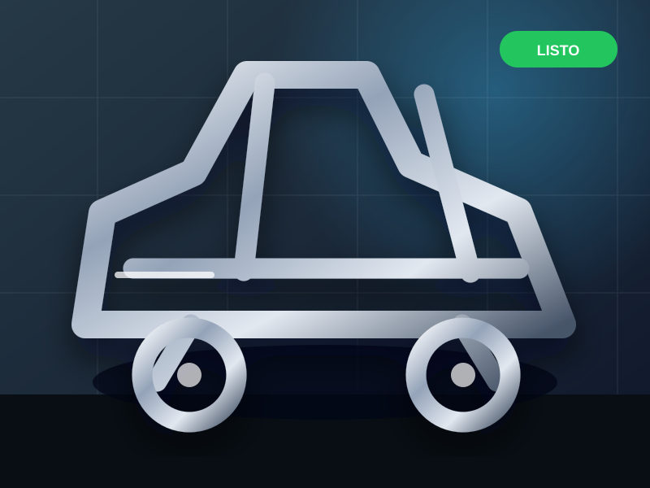
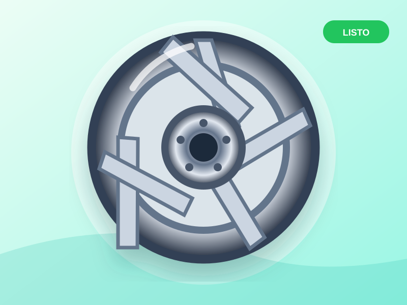
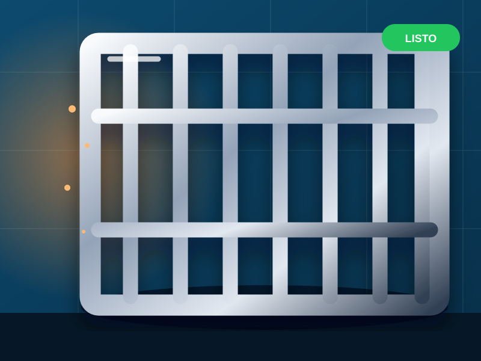
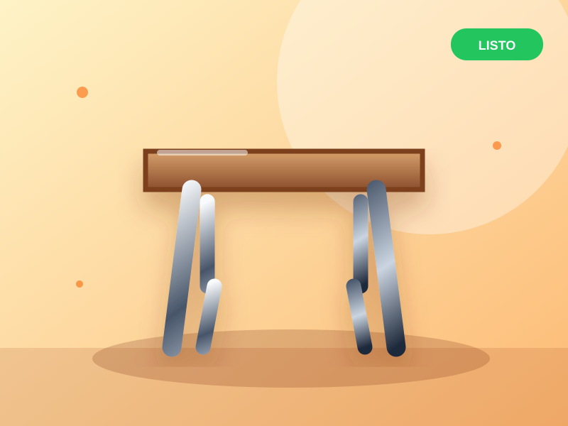

🛠️
Arenado de piezas sueltas
Herrería, herramientas, repuestos y cualquier pieza de metal que necesite limpiarse o prepararse. Arenamos lo que traigas.
Traenos tu pieza o estructura y la arenamos: limpiamos, desoxidamos y dejamos la superficie lista para pintar o restaurar. Servicio profesional en Villa Icho Cruz.

Arenamos todo tipo de piezas y estructuras. El precio depende del producto que nos traigas.
Herrería, herramientas, repuestos y cualquier pieza de metal que necesite limpiarse o prepararse. Arenamos lo que traigas.
Desoxidado de chasis, ruedas, cubiertas metálicas y piezas de autos, motos y maquinaria. Quedan listas para pintura.
Rejas, portones, barandas y muebles de hierro. Limpieza profunda y desoxidado para que la pintura dure mucho más.
No solo limpiamos: dejamos la superficie con la rugosidad justa para que la pintura, el epoxi o el barniz adhieran perfecto.
¿Tenés una estructura grande que no podés mover? Coordinamos y vamos con el equipo al lugar. Consultanos por zona.
Eliminamos óxido, pintura vieja y suciedad incrustada sin dañar la pieza. Recuperamos piezas que parecían perdidas.
Elegí el tipo de trabajo y consultanos. Como cada pieza es distinta, el precio depende del producto que traigas: te pasamos el costo exacto por WhatsApp.
Mirá cómo quedan las piezas después de pasarlas por nuestro arenado.
Algunas piezas que ya pasaron por nuestro taller.




Lo que más nos consultan
Es un proceso que lanza arena (o abrasivo) a alta presión sobre una superficie para limpiarla, desoxidarla y dejarla lista para pintar o restaurar. Elimina oxido, pintura vieja y suciedad incrustada.
Depende del producto: el precio se calcula según el tamaño, el material y el estado de la pieza. Mandanos una foto por WhatsApp y te pasamos el costo exacto y el tiempo de trabajo.
La dejás en el taller y, según el tamaño y el trabajo, la tenés lista el mismo día o al siguiente. Coordinamos la entrega por WhatsApp.
Trabajamos en Villa Icho Cruz y alrededores. Si la pieza es grande o está en tu casa, escribinos y coordinamos la visita con el equipo móvil.